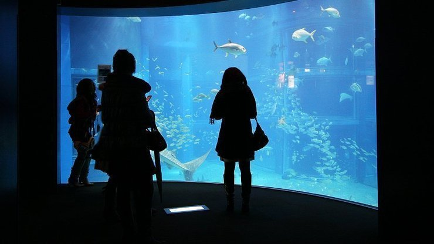

Osaka Aquarium Kaiyukan
海遊館

Osaka Aquarium Kaiyukan (海遊館, Kaiyūkan) is located in the Tempozan Harbor Village of Osaka's bay area, and is one of Japan's most spectacular aquariums. It introduces various forms of life inhabiting the Pacific Rim in a well organized and impressive way.
Marine life is displayed in over a dozen tanks, each representing a specific region of the Pacific Rim. The central tank, representing the Pacifc Ocean, is nine meters deep and home to a whale shark, the aquarium's main attraction.
Visitors start their tour of the aquarium on the 8th floor and slowly spiral down floor by floor around the central tank. Some of the tanks stretch over several floors, making it possible to observe the animals from different depths and perspectives.
